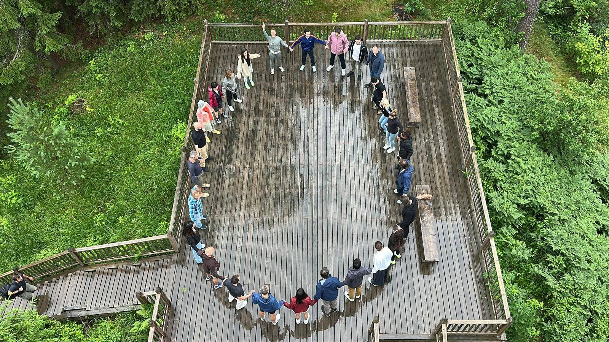
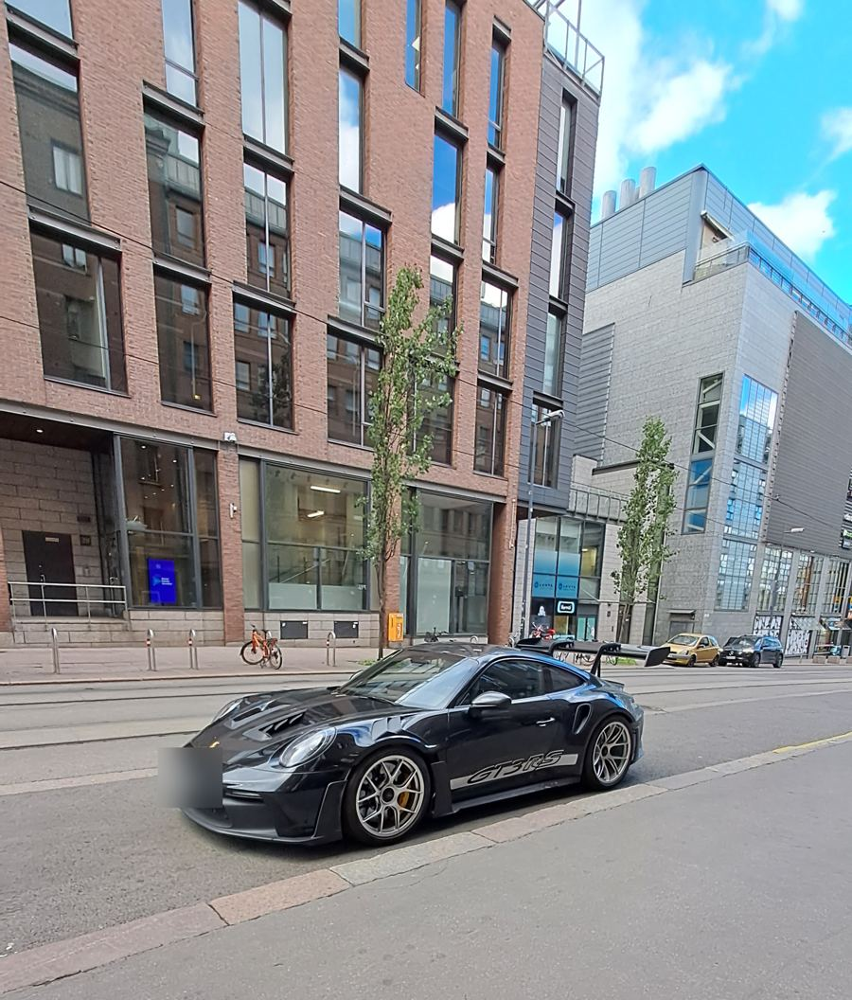
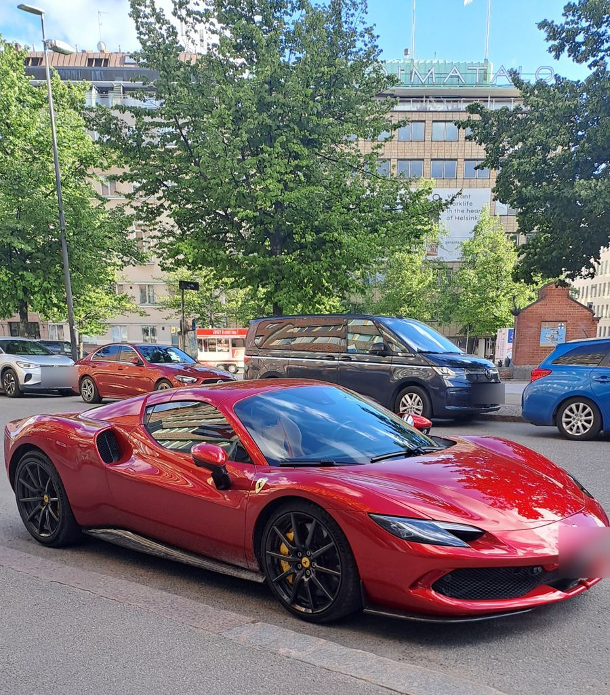
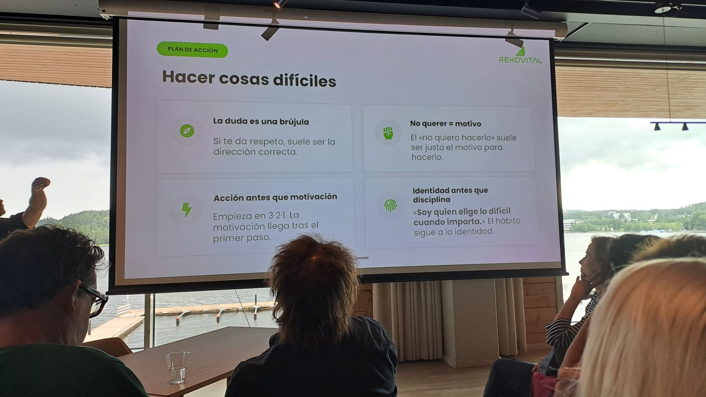
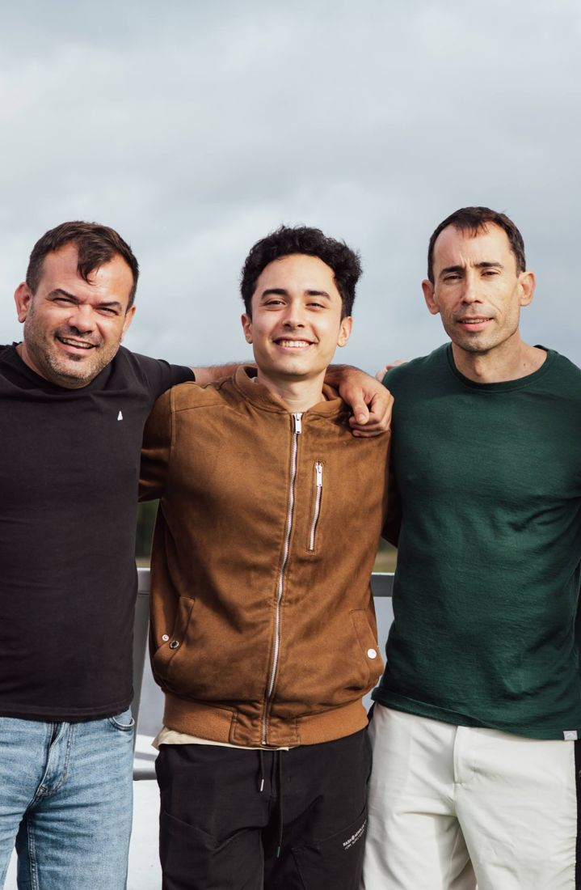
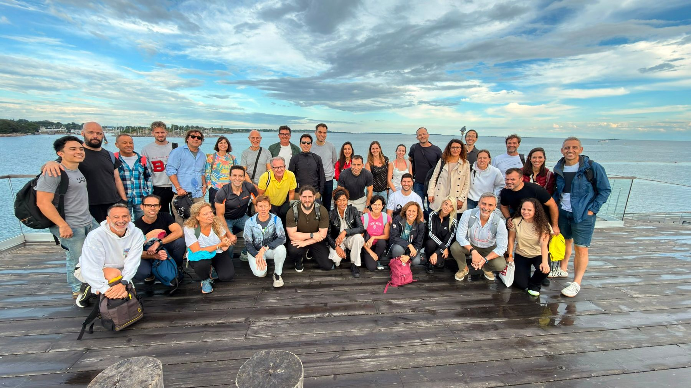

Siempre fui un muchacho curioso. De chico, un día le pregunté a mamá con toda la inocencia:
—¿Vamos a ir a Estados Unidos?
—Es la capital, hijo, no Estados Unidos.
Para mí, Estados Unidos era una gran ciudad, y la asociaba con la Capital Federal, porque eso era lo más grande que podía existir. Yo vivía en el conurbano bonaerense. Sabía que en Estados Unidos había edificios enormes y casas grandes, por lo que veía en las películas y por lo que me contaba la abuela, pero no distinguía la capital de mi país de un país extranjero. Así de chico era mi mundo.
El tiempo pasó y cada vez fui más consciente de los problemas que me tocaba enfrentar. Las vicisitudes de la vida se fueron presentando, y ante cada golpe o conflicto me preguntaba lo mismo:
Tiene que haber algo mejor. Un lugar mejor.
Cuando tenía unos diez años llegó a mis oídos una canción de coros épicos y grandilocuentes. Era «Infinity», de Stratovarius, y desde ese momento me enamoré del power metal.
De adolescente fui aprendiendo sobre Stratovarius y sobre Finlandia, un país donde las cosas funcionaban muy distinto de lo que yo conocía. Me interesé por su prosperidad económica y su calidad de vida, y por su cultura musical: un lugar donde el metal pasaba por la televisión pública y sus músicos virtuosos eran respetados por toda la sociedad. Supe que quería conocer Finlandia, pero era algo lejano. Una fantasía.
Entendí que lo que me rodeaba no era una representación fija de «todo el mundo», sino una circunstancia de la fortuna. Que no en todos lados eran comunes la droga, la delincuencia, las falencias en la educación y el choque de incentivos, y que tampoco tenía que dar por sentado que la falta de infraestructura y de servicios públicos fuera la norma.
En mi adolescencia tardía conocí el trabajo de Marcos Vázquez, divulgador de salud y sabiduría práctica. A los pocos años se convirtió en un modelo a seguir: otro referente que me ayudaba a tener las ideas claras.
A pesar de la disonancia que me producía comparar mi propia vida con lo que veía en internet, nunca me rendí.
En 2026 surgió la oportunidad de viajar a Finlandia. Y no solo eso: lo hice con mi referente número uno en superación personal, Marcos Vázquez, en un viaje pensado para vivirlo en comunidad y aprender de la sabiduría ancestral finlandesa: el sauna y la inmersión en agua fría.

Fue, hasta ahora, el viaje más esperado de mi vida. Lo postergué durante años porque creía que no era para mí, hasta que finalmente lo hice.
El viaje
Viajar solo es bueno para la mente. Te hace sentir pequeño y, al mismo tiempo, te muestra que el mundo no es peligroso; todo lo contrario: es inmenso, inabarcablemente grandioso. Estando solo te toca autogestionar la ansiedad entre tantas cosas que podrías hacer, y valértelas por vos mismo en una tierra inexplorada, aunque totalmente segura.
Al contrario de mi viaje a la selva ecuatoriana, donde todo es virgen y salvaje (quizás algún día lo documente), en Finlandia había una línea delgada entre tecnología y tradición, entre el status pomposo y el minimalismo.


Quedé encantado con el famoso sauna finlandés, una maravilla que me gustaría que fuera accesible en todo el mundo y que en Argentina solo existe dentro de spas y círculos premium. Me traje también su idea del orden: infraestructura avanzada, eficiencia y respeto por lo público, un bucle que se retroalimenta. Cuanto mejor funciona lo público, más se lo cuida; y cuanto más se lo cuida, mejor funciona.
Lo mejor del viaje fue conocer personas extraordinarias, y por suerte no hace falta ir hasta Finlandia para encontrarlas. Lo segundo mejor fue estar con gente que te empuja a hacer cosas incómodas. Soportar el dolor se hace más llevadero en grupo.

Y lo mejor de Finlandia fue entender que no hay que buscar tanto afuera, porque basta con creer en uno mismo. Curiosamente, eso es lo más difícil. Es entender que la sabiduría nace de adentro hacia afuera, y eso nadie te lo va a quitar, ni en la pobreza extrema.

No hay nada más profundamente esperanzador que cambiar el rumbo de la vida hacia el que uno realmente quiere. A cualquiera que me lea: viajen. Y si no se animan a hacer algo, háganlo igual.
Les agradezco a Marcos Vázquez y a Matías Mut por hacer posible esta experiencia, y a todos y cada uno por compartir algo de sí mismos y disfrutarla, porque su disfrute es mi disfrute.

No sé cuándo volveré a tierras finlandesas. Pero ahora sé que el chico que confundía la capital con Estados Unidos terminó en Helsinki.